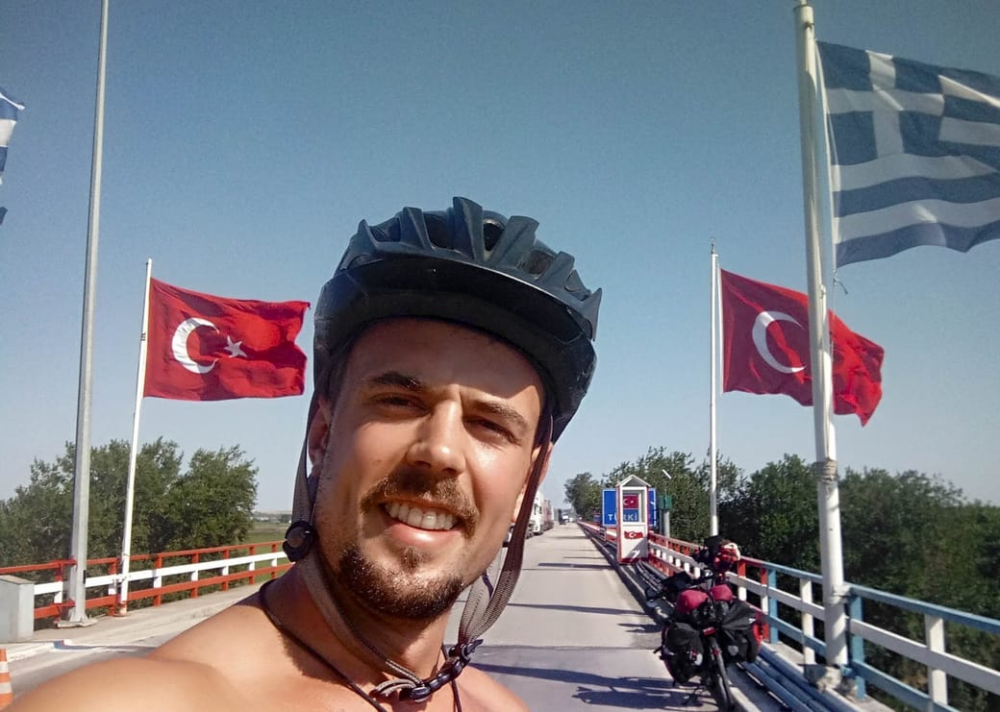

At the border crossing between Greece and Turkey
Hi everyone, I’m Basile. Welcome to my blog!
I’m twenty-six years old and I’m originally from France and Switzerland. I’m not a professional biker. In fact, the longest bike trip I had ever taken was a four-hour ride with my dad when I was twelve. So why did I decide to embark on such a long adventure?
I had always known that I wanted to spend some time in China. About a year ago, I came across some videos of people who were crossing Russia by bicycle. At first, I thought, “That’s crazy. It’s not for me. It’s too far-fetched.”
But I reconsidered. The world is out there, waiting to be explored. It’s filled with its rich history, its undiscovered mysteries, and its kind-hearted people. I could have spent the rest of my life living in a bubble of expectations. Instead, I chose to take a leap of faith and experience the unexpected, the disillusioning, and the marvelous.
After completing my studies in Robotics in Zürich and working for a few months in a tech start-up, I decided to listen to my inner voice. Instead of taking a plane, I made the decision to bike from Paris, my hometown, all the way to Hong Kong.